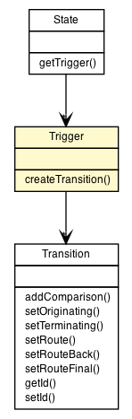

org.vorpal.blade.library.fsmar2.Trigger
org.vorpal.blade.library.fsmar2.Trigger
|
|||||||||
| PREV CLASS NEXT CLASS | FRAMES NO FRAMES | ||||||||
| SUMMARY: NESTED | FIELD | CONSTR | METHOD | DETAIL: FIELD | CONSTR | METHOD | ||||||||

java.lang.Object
public class Trigger
| Field Summary | |
|---|---|
java.util.ArrayList<Transition> |
transitions
|
| Constructor Summary | |
|---|---|
Trigger()
|
|
| Method Summary | |
|---|---|
Transition |
createTransition(java.lang.String next)
|
| Methods inherited from class java.lang.Object |
|---|
clone, equals, finalize, getClass, hashCode, notify, notifyAll, toString, wait, wait, wait |
| Field Detail |
|---|
public java.util.ArrayList<Transition> transitions
| Constructor Detail |
|---|
public Trigger()
| Method Detail |
|---|
public Transition createTransition(java.lang.String next)
|
|||||||||
| PREV CLASS NEXT CLASS | FRAMES NO FRAMES | ||||||||
| SUMMARY: NESTED | FIELD | CONSTR | METHOD | DETAIL: FIELD | CONSTR | METHOD | ||||||||